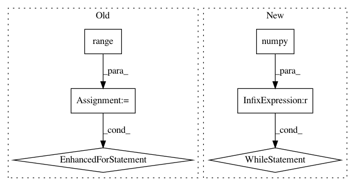

a3c0931db118404cf90d91d4f44a8736c10e835a,tf_agents/agents/sac/examples/v2/train_eval.py,,train_eval,#Any#Any#Any#Any#Any#Any#Any#Any#Any#Any#Any#Any#Any#Any#Any#Any#Any#Any#Any#Any#Any#Any#Any#Any#Any#Any#Any#Any#Any#Any#Any#Any#Any#Any#Any#,72
Before Change
if use_tf_functions:
train_step = common.function(train_step)
for _ in range(num_iterations):
start_time = time.time()
time_step, policy_state = collect_driver.run(
time_step=time_step,
policy_state=policy_state,
)
for _ in range(train_steps_per_iteration):
train_loss = train_step()
time_acc += time.time() - start_time
global_step_val = global_step.numpy()
if global_step_val % log_interval == 0:
logging.info("step = %d, loss = %f", global_step_val,
train_loss.loss)
steps_per_sec = (global_step_val - timed_at_step) / time_acc
logging.info("%.3f steps/sec", steps_per_sec)
tf.compat.v2.summary.scalar(
name="global_steps_per_sec", data=steps_per_sec, step=global_step)
timed_at_step = global_step_val
time_acc = 0
for train_metric in train_metrics:
train_metric.tf_summaries(
train_step=global_step, step_metrics=train_metrics[:2])
if global_step_val % eval_interval == 0:
results = metric_utils.eager_compute(
eval_metrics,
eval_tf_env,
eval_policy,
num_episodes=num_eval_episodes,
train_step=global_step,
summary_writer=eval_summary_writer,
summary_prefix="Metrics",
)
if eval_metrics_callback is not None:
eval_metrics_callback(results, global_step_val)
metric_utils.log_metrics(eval_metrics)
if global_step_val % train_checkpoint_interval == 0:
train_checkpointer.save(global_step=global_step_val)
if global_step_val % policy_checkpoint_interval == 0:
policy_checkpointer.save(global_step=global_step_val)
if global_step_val % rb_checkpoint_interval == 0:
rb_checkpointer.save(global_step=global_step_val)
return train_loss
def main(_):
After Change
if use_tf_functions:
train_step = common.function(train_step)
global_step_val = global_step.numpy()
while global_step_val < num_iterations:
start_time = time.time()
time_step, policy_state = collect_driver.run(
time_step=time_step,
policy_state=policy_state,
)
for _ in range(train_steps_per_iteration):
train_loss = train_step()
time_acc += time.time() - start_time
global_step_val = global_step.numpy()
if global_step_val % log_interval == 0:
logging.info("step = %d, loss = %f", global_step_val,
train_loss.loss)
steps_per_sec = (global_step_val - timed_at_step) / time_acc
logging.info("%.3f steps/sec", steps_per_sec)
tf.compat.v2.summary.scalar(
name="global_steps_per_sec", data=steps_per_sec, step=global_step)
timed_at_step = global_step_val
time_acc = 0
for train_metric in train_metrics:
train_metric.tf_summaries(
train_step=global_step, step_metrics=train_metrics[:2])
if global_step_val % eval_interval == 0:
results = metric_utils.eager_compute(
eval_metrics,
eval_tf_env,
eval_policy,
num_episodes=num_eval_episodes,
train_step=global_step,
summary_writer=eval_summary_writer,
summary_prefix="Metrics",
)
if eval_metrics_callback is not None:
eval_metrics_callback(results, global_step_val)
metric_utils.log_metrics(eval_metrics)
if global_step_val % train_checkpoint_interval == 0:
train_checkpointer.save(global_step=global_step_val)
if global_step_val % policy_checkpoint_interval == 0:
policy_checkpointer.save(global_step=global_step_val)
if global_step_val % rb_checkpoint_interval == 0:
rb_checkpointer.save(global_step=global_step_val)
return train_loss
def main(_):
In pattern: SUPERPATTERN
Frequency: 4
Non-data size: 6
Instances
Project Name: tensorflow/agents
Commit Name: a3c0931db118404cf90d91d4f44a8736c10e835a
Time: 2020-07-15
Author: leekh@google.com
File Name: tf_agents/agents/sac/examples/v2/train_eval.py
Class Name:
Method Name: train_eval
Project Name: tensorflow/agents
Commit Name: 754226949c99108ef22cbf8009e8c40efbbc7b5a
Time: 2021-01-24
Author: ormandi@google.com
File Name: tf_agents/experimental/distributed/examples/sac/sac_collect.py
Class Name:
Method Name: collect
Project Name: tensorflow/agents
Commit Name: 754226949c99108ef22cbf8009e8c40efbbc7b5a
Time: 2021-01-24
Author: ormandi@google.com
File Name: tf_agents/experimental/distributed/examples/sac/sac_train.py
Class Name:
Method Name: train
Project Name: tensorflow/models
Commit Name: e170a8bad93da7676dadfdc8be32072a7bb46f75
Time: 2019-08-30
Author: gardener@tensorflow.org
File Name: official/transformer/v2/transformer_main.py
Class Name: TransformerTask
Method Name: train